GENITOURINARY IMAGING
Dr.B.N.Mugi
Consultant Radiologist, Kenyatta National Hospital. Nairobi.
GENERILINDICATIONS
- Abdominal (loin) pains
- Abdominal mass
- Haematuria
- Recurrent UTI
- Difficulty in micturition
- Pelvic mass
- Presence of congenital abnormalities ;-
- Vacterl syndrome
- Trauma
The Pediatric Age Group
- Congenital abnormalities -
- Bear in mind the embryology of the genital urinary system.
- Renal anomalies
- Ureteric anomalies
- Bladder anomalies
- Urethral anomaljes
- Other pelvic anomalies
- Acquired abnormalities
Irriegling ruodaljijes
- Plain abdominal X-ray
- Ultrasound
- Radionuclide scan
- IVU
- MCU
- CT Scan
- MRI
- Arteriography
- Interventional procedures
- Others
1. PLAIN ABDOMINAL X - RAY (KUB)
- Kidneys surrounded by perirenal fat.
2. UL-5r ASOUND
- Is the investigation of 1st choice Absence of ionizing radiation.
- Transducer choice - 5 Mhz sector probe or a higher frequency transducer.
- Approach is trans-abdominal or pelvic
- No major patient preparation required.
Applications
- Differentiate normal from abnormal.
- Normal kidney - echogenic renal sinus, lower echo cortex
- In neonates and infants renal cortex is thinner & has the same echogenicity as the liver.
- After the third month the kidneys have the same appearance as the adult kidney with central echoes and a sonolucent outer cortex.
- The renal pyramids are prominent and sonolucent.
- The size and volume of the kidneys and any mass is accurately measured by ultrasound.
| Age | Average renal length (cm) |
|---|---|
| 0-1wk | 4.48 |
| 1wk - 4mo | 5.28 |
| 4-8mo | 6.15 |
| 8mo - 1yr | 6.23 |
| 1-2yrs | 6.65 |
| 2-9yrs | 7-8 |
| 9-12yrs | 9-10 |
| > 12yrs | 10 cm above |
- Parenchymal lesions easily demonstrated
- Differentiate cystic vs solid lesions/masses
- Renal vascularity can be determined by Doppler
- Vascular involvement of renal tumors/tumor invasion into renal vein & IVC
- Involvement of other visceral organs
- Exclude renal vein thrombosis.
- In renal failure measure renal size characterize the echogenicity of the kidneys, presence or absence of obstruction.
Calculous Dx
- Detect & locate radiolucent as well as radioopaque calculous
Transplant Kidneys
- Exclude obstruction, urinoma, lymphocoele.
Post-Surgical Follow Up
- Re-implanted ureters to exclude obstruction
- Bladder augmentation post reconstruction for extrophy or neurogenic bladder.
- Bladder outflow obstruction
- Check upper tracts for obstruction and document post micturition residue.
The Male Pelvis
- Scrotal anomalles.
- Visualize testes
- 4% of the testes undescended in term infants, in 10-25% are retractile
- 0-7% cryptochirdism.
- The testes descend to the scrotum at 7-8 months (in utero) or 4-6wks after birth.
- On U/S homogenous medium level echogenicity spherical or oval in shape ( 7-10 mm ) undescended small oval or elongated.
2) Acute Scrotum
- Testicular torsion Uncommonly in newborn or in - utero
-
Testicular masses
- Tumors
- Haematomas
- Infection - Epididymitis
The Female Pelvis
Ovaries
- Cysts
- Malignancies
- Infections
Uterus & Vagina
- Congenital anomalies
- Malignancies
- Infections
- Pregnancy
frieryeritorjel procestures
- Guide for needle aspiration cytology
- Cyst aspiration
- Needle nephrostomy
rauma
- Determine area & extent of injury
INTRAY YNOUS UROGRAPENY
- Is the most valuable investigation of the Urinary Tract
- Excellent anatomical images of the kidneys & to some extent indication of function.
Indications
- Suspected renal or ureteric pathology
- Retroperitoneal pathology
Contra-indications
- Previous hx of severe rxn to iodinated CM
- Renal failure with Urea levels >18mmol/l
Petifut Preparation
Younger Children.
- NBM for at least 4 hrs
- May give enema before the examination
The Older Children (>6yrs)
- NBM 6-8 hrs prior to examination
- Dulcolax
- Light diet for 3 days
- Well hydrated
Contrast Media
- Water sol CM
- Amount - 1 - 1.5 mls/kg
Film Sequence
- Preliminary film - KUB, Supine AP renal area.
- Check bowel preparation
- Exposure factors
- Pathology e.g. calcification
Injection of Contrast
- Bolus - Maximize density of nephrogram
The Immediate Film
- 10-14 sec after injection (Nephrogram)
2-5 Min Film
- AP renal areas
- Assess excretory function and whether symmetrical or not.
15 Min Full Length
- Assess the pelvi-calyceal system, ureters & bladder.
- May give a fizzy drink
- Pelvj-calyceal system well outlined against gas filled stomach.
Bladder View
- After micturition bladder view
Adolitional Films
- Oblique views
- Prone views
- Delayed films (up-to 24 hrs )
4. MCU & ASCENDJNG UREIFIROGRAIY
- Indications
- Contra-indications
- Patient preparation
- Technique
5. C'T SCAN
- Presence of abundant retro - peritoneal fat.
- Evaluate & stage renal masses
- Differentiate cyst from tumor when ultrasound is equivocal.
- Exclude small tumors in patients with haematuria & normal findings on other investigations
Renal Treuurie!
- Show extent of injury better than ultrasound
Lower Urinary Tracts
- Stage pelvic tumors.
- Follow-up after surgery, radiotherapy & chemotherapy
Calculous Disease
- Precise localization of calculus
- Retroperitoneal pathology, Retroperitoneal fibrosis or tumor
- Filling defects in the pelvi-calyceal system
6. IXIRI
- Excellent soft tissue contrast
- Multi-planar capability
- Substitute for CT in patients who cannot tolerate iodinated contrast
- Equivocal CT study
Z. P.A.DJONUSC JDE JMAS GNG
Indications
- In impaired renal function
- Poor perfusion
- Renal tubular dysfunction
- Obstruction
- Vesico- ureteric reflux
- Infection (Gallium Citrate)
- Dynamic imagjing - 99TCM-DTPA
- Static imaging - 99TCM-DMSA

- May be used for embolization
- Study renal arterial anatomy in renal transplant donor
- To exclude renal artery stenosis or thrombosis
9. NNTERYENJTJONALI PROCEDURES
- Retrograde pyelography
- Antegrade pyelography
10. 0斤! 5다
- Genitogram - Ambigous genitalia
- Colostogram - In ARMs, to rule out fistulous communication to the bladder & urethra.
Norrued Kidneys on Ultiresound


Color Doppler Plus Spectrum
 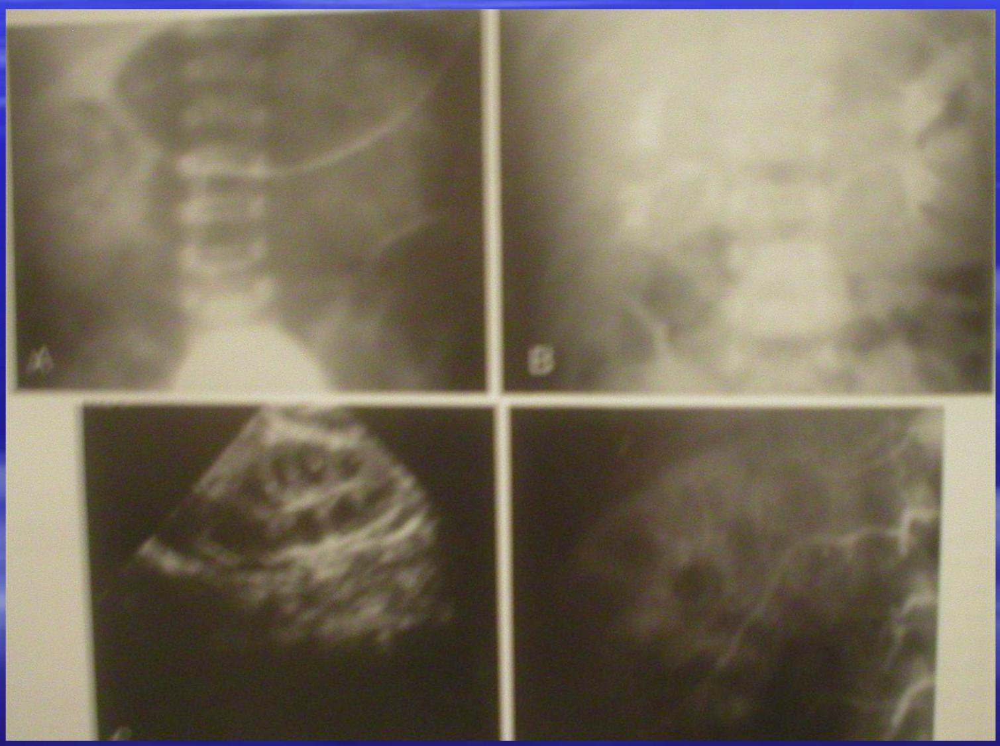
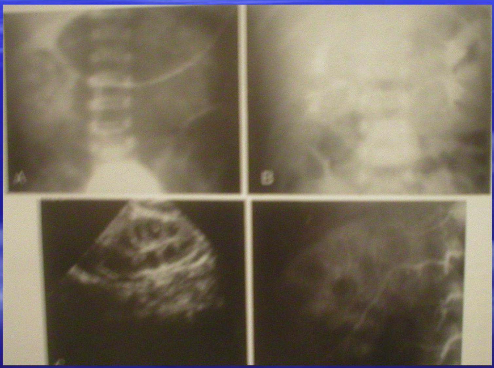
Adrenal Glands
 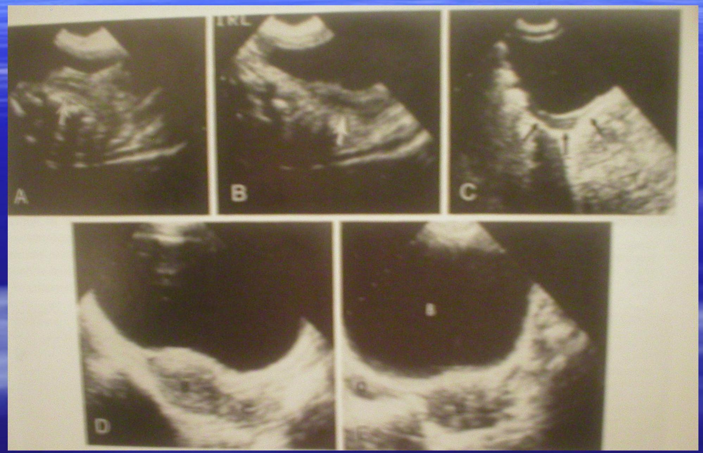
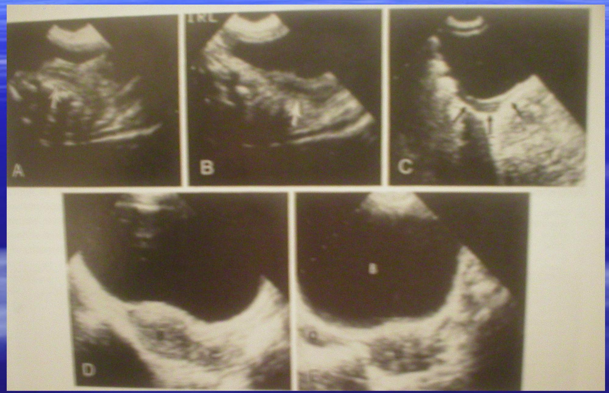
Normal Kidneys - JVU, US & Arieriograms
Norsual testes/epididymis

Nornial Uterus on US
Distended Stornach
Norsual suale urethre!

Norruel Blacter & Urethra

Usethral Divericular

Urethuel Spelsu


Neurogenjic Blaclder


Cystitis
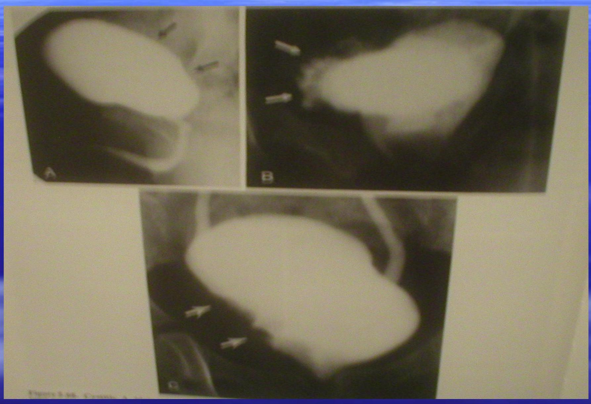
Posterjor Urethral Valves & Hydronephrosis/Hydroureter
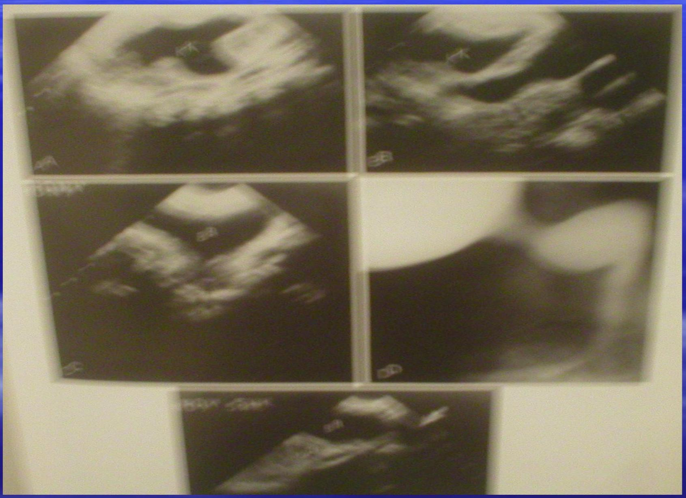


Posterior Urethral Valves
Positerior Urethral Valves
Posterior Urethral Valves, Secondary Reflux.
Ureteric Duplication


Ureteric Divericular


Ureterocoeles
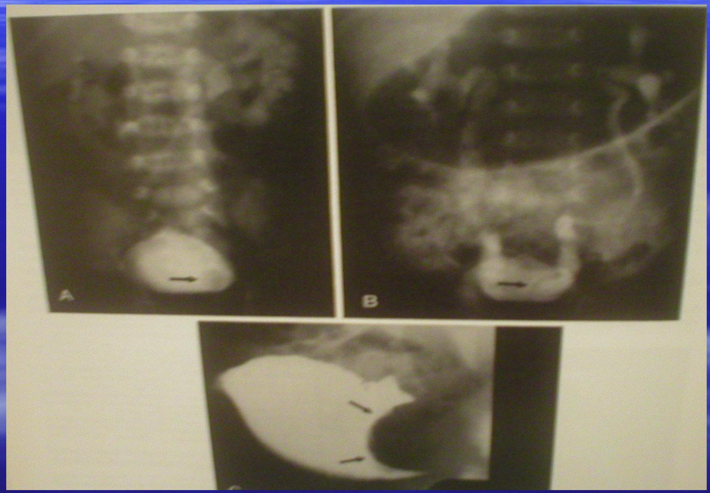
Renal Ectopia!
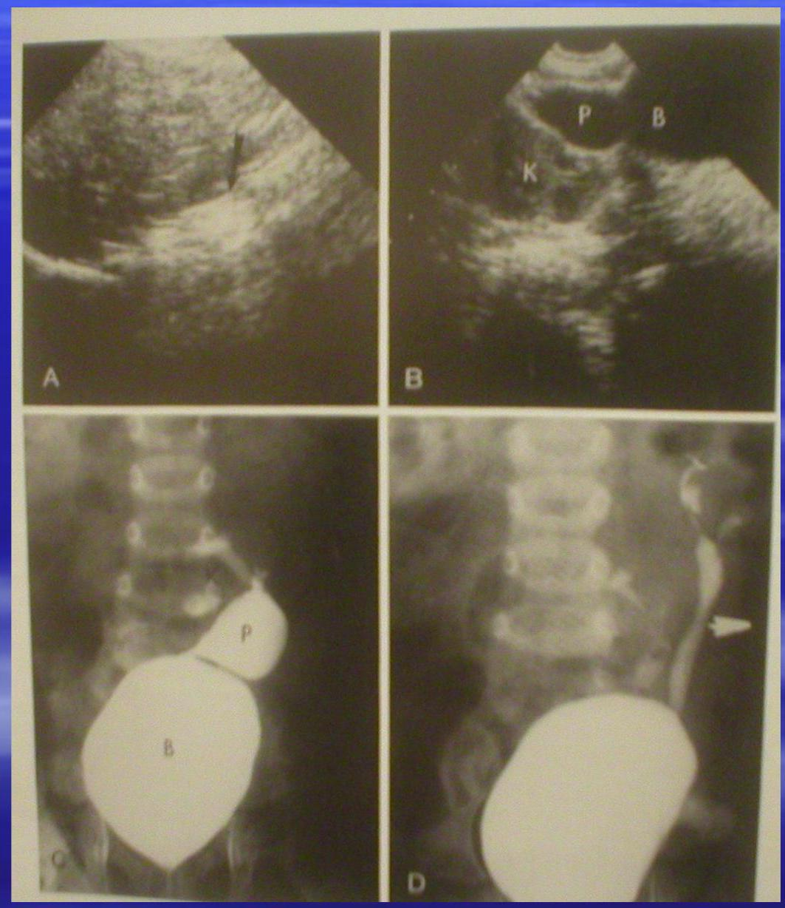
Horse S'roe Kidney
Horses'hore Kidney


Crossed Ectopie!

Pight Ectopic Kidney
Pelvic Kiclsey


APYD
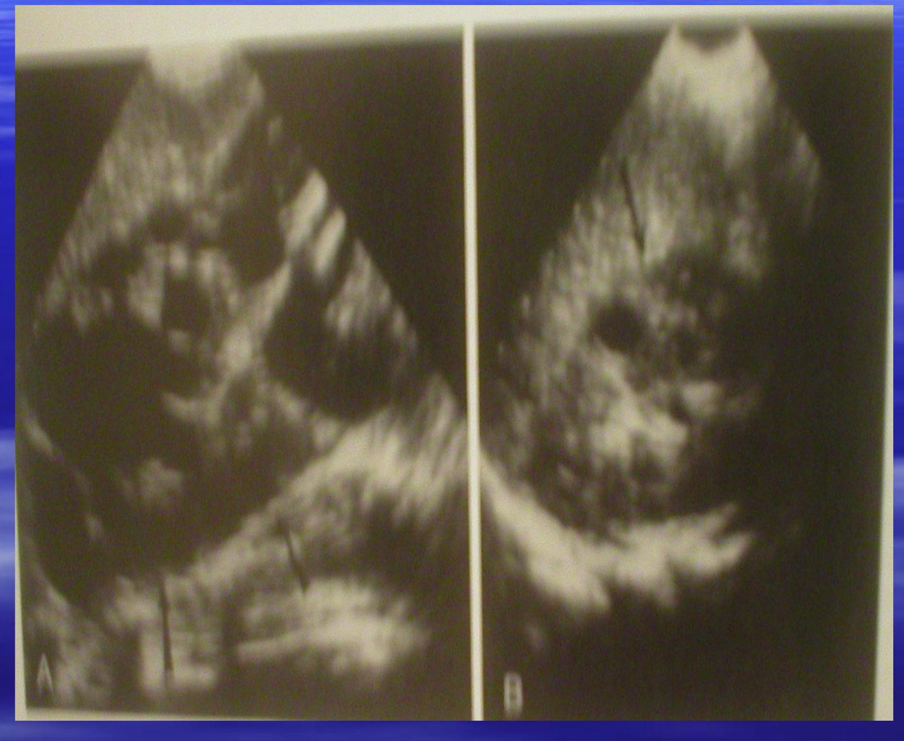
Infentifle Polycystic Kidney Disease
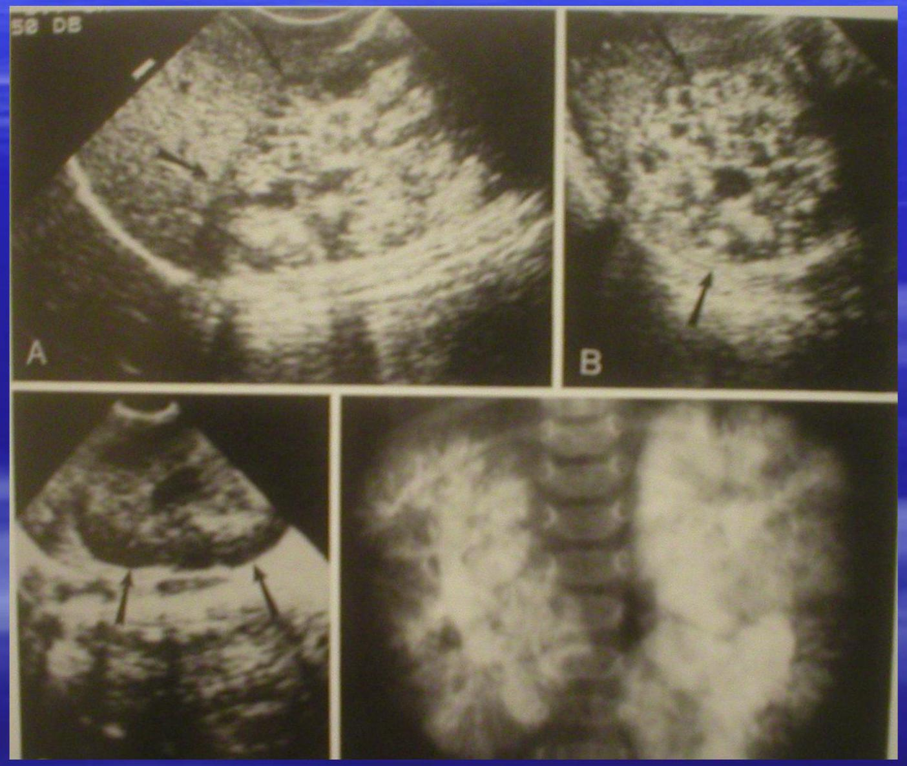
Renal Cysts

Reflel Scienring
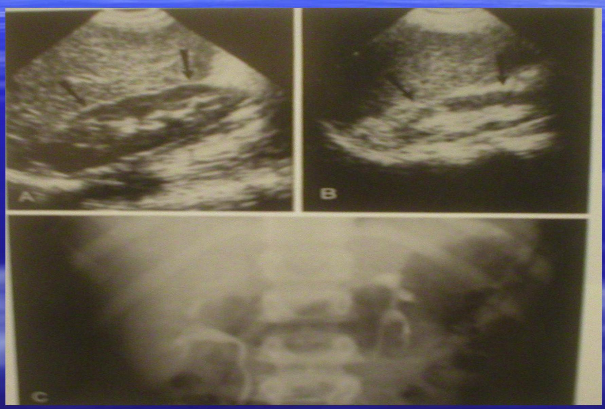
Renal Scans - Ri Hydronephirosis
Hydronephisosis
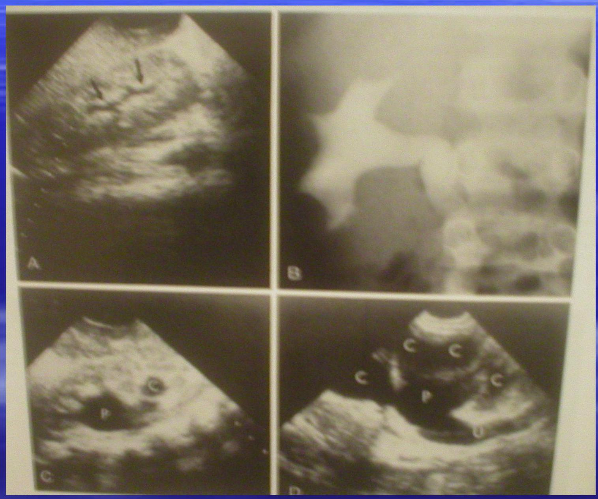
Calculus Disealse

Arteriograns - Renal Antery Sterosis
Flydronsetocolpos

Ovanjan Cysts

OVEIJIN CYsts

Genitogram (Persistent urogenital sinus)


Color Flow Issagye

C'EC'C'

Post JY Contrast - One Second
Contrast Enhanced C-T of Ridneys


Multicystic Nephromal

Retroperitoneal Nsass

Mylms Insous

Mylms Insous

Wilm's Tunnour

Wilms Turnour - Ultrasound & MFSI

Wilsns Turnour
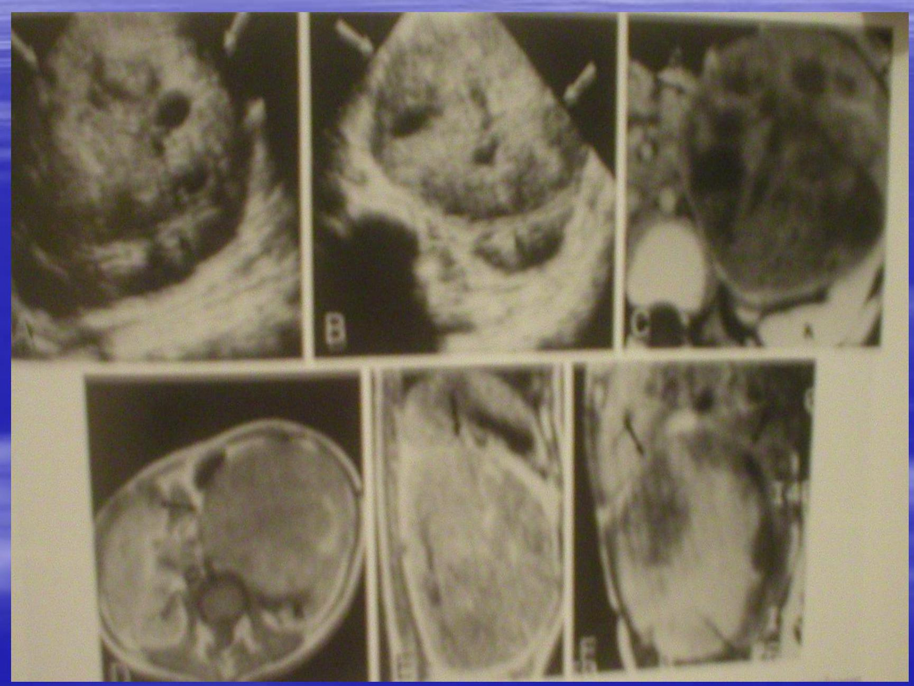Neuroblastoma

Phatodornyosersonsá - Blactler
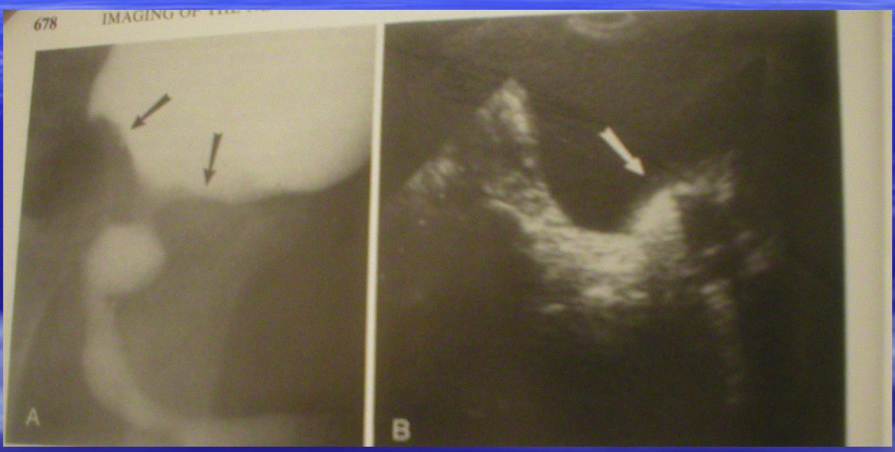